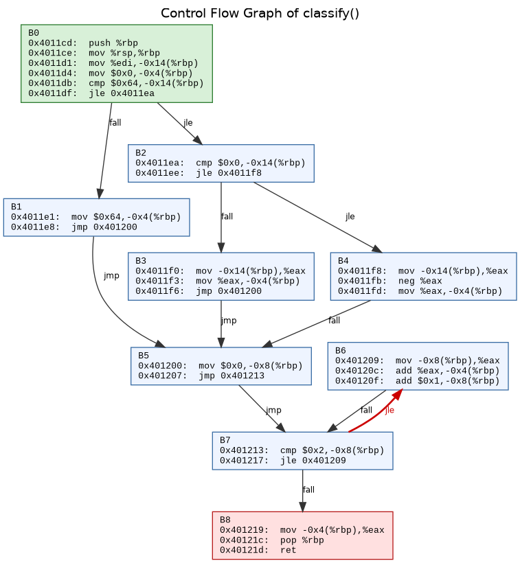
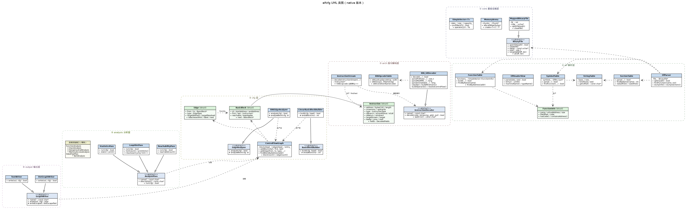
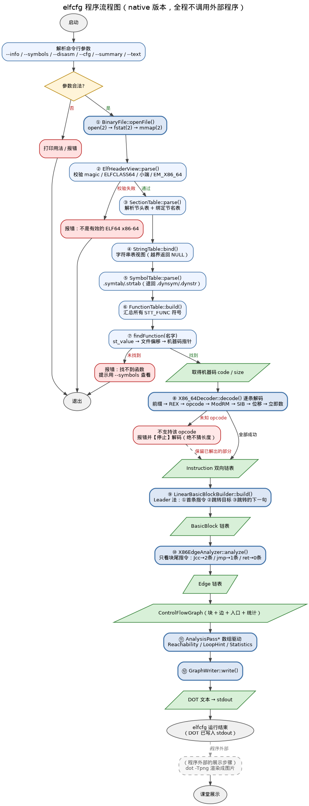

native 版本 · 完全自研，不调用任何外部程序
《软件安全原理》课堂练习 · C++ 实现，不使用 STL 与任何第三方库
objdump 获取反汇编再自行分析；
本版把 ELF 解析、函数定位、机器码解码也全部自己实现 ——
从打开文件到画出控制流图，全程不启动任何外部程序。popen/system/exec/fork ·
源码中无 objdump/readelf/nm 调用。
gcc -x c++ -std=c++11 -O0 -g -Wall -Wextra -Wpedantic -I src \
src/main.cpp src/core/*.cpp src/elf/*.cpp src/arch/*.cpp src/arch/x86/*.cpp \
src/cfg/*.cpp src/analysis/*.cpp src/output/*.cpp -lstdc++ -o elfcfggcc -O0 -fno-pie -no-pie tests/demo.c -o demo./elfcfg demo classify > classify.dot
dot -Tpng classify.dot -o classify.png
xdg-open classify.png./elfcfg --info demo 查看 ELF 概览（自己解析的文件头）
./elfcfg --sections demo 查看节表
./elfcfg --symbols demo 查看符号表 / 函数表
./elfcfg --disasm demo classify 查看自己的反汇编结果（不调用 objdump）
./elfcfg --summary demo classify 查看 CFG 统计与循环提示
./elfcfg --text demo loop_sum 文本形式 CFG，终端直接讲解| 函数 | 地址 | 字节 | 指令 | 基本块 | 边 | 向后跳转边 | 说明 |
|---|---|---|---|---|---|---|---|
simple_if | 0x401136 | 28 | 11 | 4 | 4 | 0 | 最简单的单条件分支 |
nested_if | 0x401152 | 65 | 18 | 7 | 9 | 0 | 嵌套条件 |
loop_sum | 0x401193 | 59 | 19 | 7 | 8 | 2 | for + while 两条循环 |
classify | 0x4011cd | 81 | 26 | 9 | 11 | 1 | 课堂主用例 |
switch_test | 0x40121e | 68 | 21 | 9 | 9 | 0 | 跳转表，见已知限制 |
call_test | 0x401262 | 65 | 23 | 1 | 0 | 0 | 无分支，顺序执行到 ret |
classify 与 main 均为
26/26 条指令的地址、助记符、操作数完全一致readelf -S 逐项一致tests/verify_against_objdump.py，仅由人工在开发阶段运行。

绿色 B0 = 入口块 红色 B8 = 出口块（含 ret） 红色加粗 B7→B6 = 向后跳转边（对应 for 循环）
| 图形元素 | 含义 |
|---|---|
| 每个方框 | 一个基本块，框内逐行列出：指令地址 + 助记符 + 操作数（全部由本程序解码得出） |
jle / fall 成对出现 | 条件跳转分叉成两条路径。注意：jle 是"≤ 就跳走"，所以跳转边对应源码条件不成立，fall 边才对应成立 |
| 红色加粗箭头 | 向后跳转边（目标地址 ≤ 源地址）。这是演示性近似，严格意义的 CFG back edge 需要支配关系判定 |
| 绿色框 / 红色框 | 函数入口块 / 函数出口块 |

空心三角 = 继承 虚线箭头 = 依赖/生产 空心菱形 = 聚合 （完整 Mermaid 源码见 docs_native/UML.md）
| 抽象基类 | 派生类 | 虚函数 | 多态的意义 |
|---|---|---|---|
| BinaryFile | MappedBinaryFile | openFile/closeFile/data/size | 换 read() 实现时上层不变 |
| InstructionDecoder | X86_64Decoder | decode() | 换架构只需换派生类 |
| BasicBlockBuilder | LinearBasicBlockBuilder | build() + endsBlock() | 不同划分策略可替换 |
| EdgeAnalyzer | X86EdgeAnalyzer | analyze() + analyzeBlock() | 不同指令集出边规则可替换 |
| AnalysisPass | Reachability / LoopHint / Statistics | run() | 新增分析不必改主流程 |
| GraphWriter | DotGraphWriter / TextWriter | write() | 可扩展 JSON 等输出 |

虚线框内为程序外部的展示步骤（elfcfg 输出 DOT 到 stdout 后即运行结束）
dot -Tpng 属于程序外部的展示步骤，不参与任何分析| 层 | 目录 | 行数 | 关键类 |
|---|---|---|---|
| ① 基础设施 | src/core/ | 665 | BinaryFile / MappedBinaryFile · MemoryArena · SimpleVector<T> · Log |
| ② ELF 解析 | src/elf/ | 1714 | ElfParser · ElfHeaderView · SectionTable · StringTable · SymbolTable · FunctionTable |
| ③ 指令解码 | src/arch/ | 1627 | InstructionDecoder · X86_64Decoder · X86OpcodeTable · InstructionStream |
| ④ CFG | src/cfg/ | 818 | ControlFlowGraph · BasicBlockBuilder · EdgeAnalyzer · BasicBlock · Edge |
| ⑤ 分析 | src/analysis/ | 494 | AnalysisPass · ReachabilityPass · LoopHintPass · StatisticsPass |
| ⑥ 输出 | src/output/ | 353 | GraphWriter · DotGraphWriter · TextWriter |
| 入口 | src/main.cpp | 321 | 命令行解析与流程编排 |
合计 49 个源文件，5992 行。 依赖方向严格单向：① ← ② ← ③ ← ④ ← ⑤/⑥，上层只通过抽象基类指针与下层交互。
| # | 限制 | 现象 / 影响 |
|---|---|---|
| 1 | 解码器非完整实现 | 不支持三字节 opcode（0F 38 / 0F 3A）、SSE/AVX、x87 浮点、位操作指令；遇到即报错停止 |
| 2 | 间接跳转目标不可解析 | jmp *%rax 生成 EDGE_INDIRECT 边，目标块为空，可达性会漏 |
| 3 | switch 跳转表 | 能识别为间接跳转，但不读表内容，各 case 的块会被误判为不可达（见 --text demo switch_test） |
| 4 | "向后跳转边"是演示性近似 | 判据为"目标地址 ≤ 源地址"，不是严格 back edge（严格需支配关系）；统一称 backward jump hint |
| 5 | 依赖符号表 | strip 后的二进制无法按名字定位函数，会明确报错并提示用 --symbols |
| 6 | 其它 | 只支持 ELF64 小端 x86-64；只分析函数内部 CFG；不解析 .eh_frame；不处理重定位 |
| 内容 | 路径 |
|---|---|
| C++ 源码（49 个文件） | src/ |
| 测试程序与验证脚本 | tests/demo.c、tests/verify_against_objdump.py |
| 技术文档（8 份） | docs_native/：ARCHITECTURE / ELF / DECODER / CFG / LIMITATIONS / UML / FLOWCHART / CLASS_PRESENTATION |
| UML 类图 | docs_native/uml_native.png + uml.dot + Mermaid 源码在 UML.md |
| 程序流程图 | docs_native/flowchart_native.png + flowchart.dot + Mermaid 源码在 FLOWCHART.md |
| CFG 的 DOT / 图片 | classify.dot、classify_native.png |
| 可执行文件 | elfcfg（工具）、demo（测试程序） |
旧版（调用 objdump 的版本）保存在上一级目录，未做改动。
本页由 elfcfg native 版本项目生成 · 2026-09-16